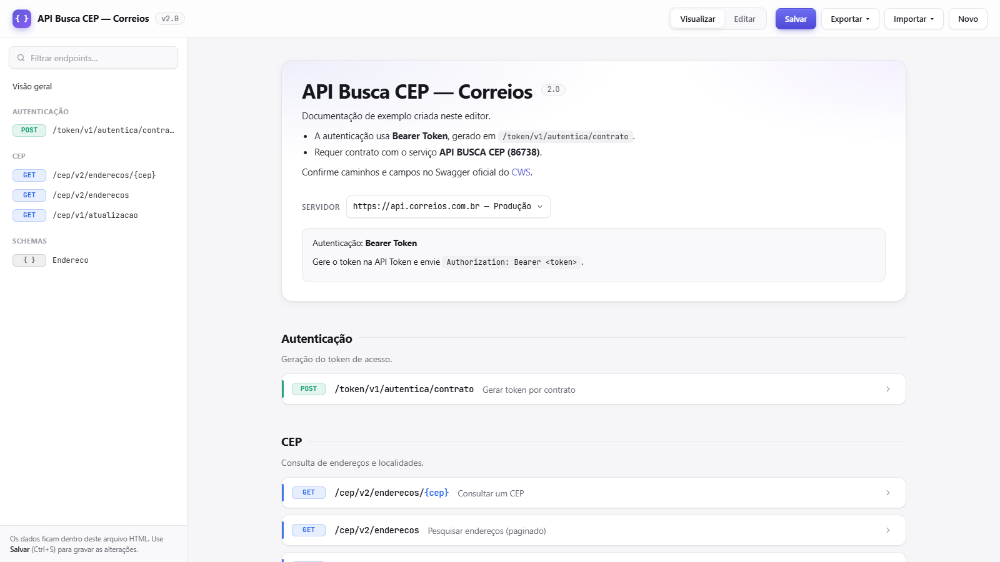
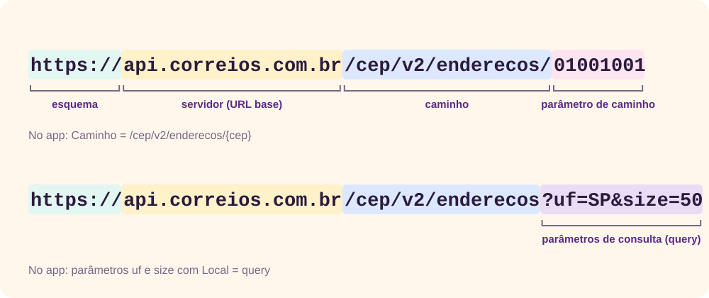
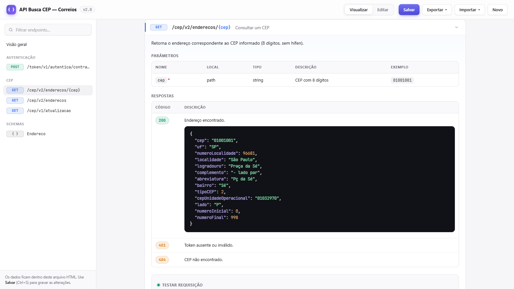
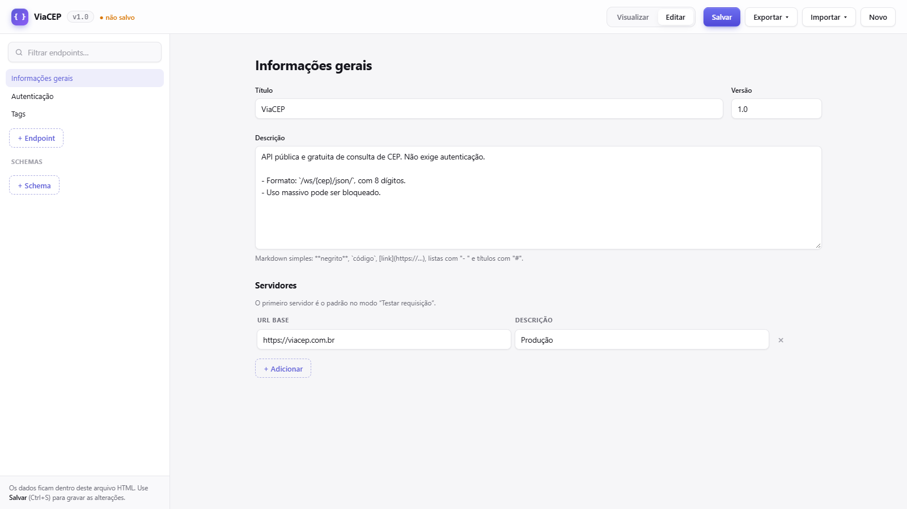
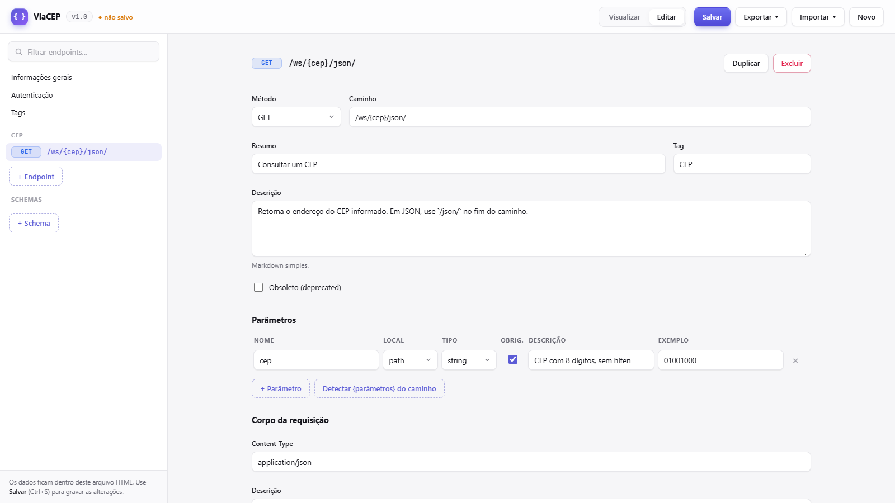
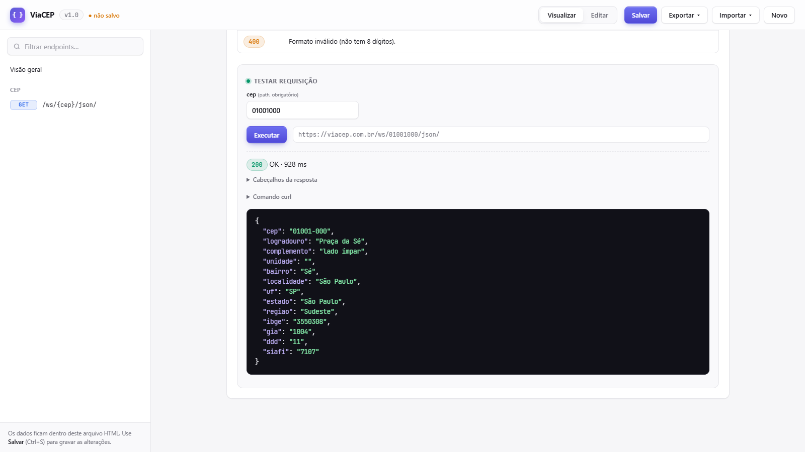
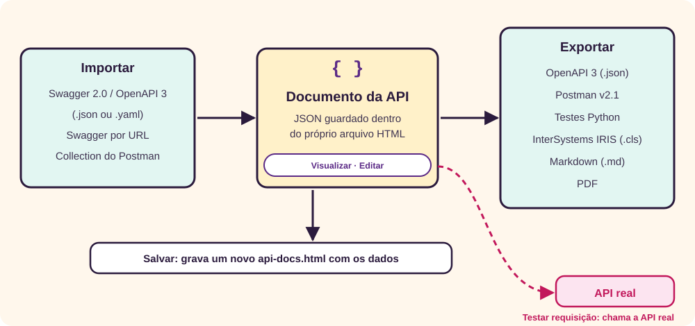
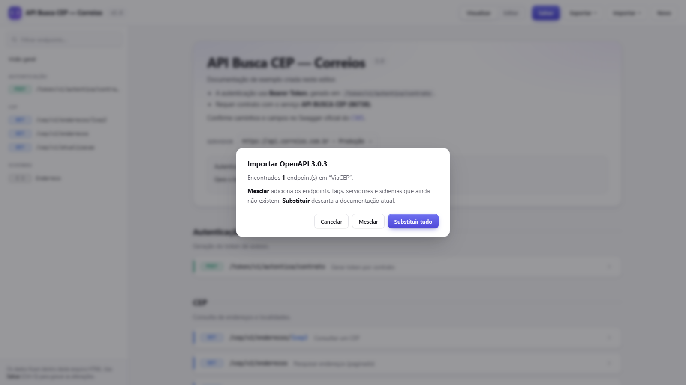
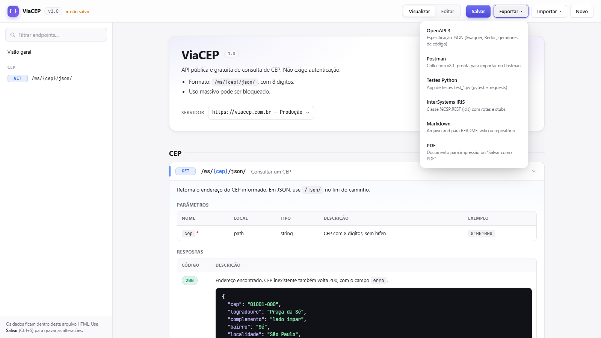
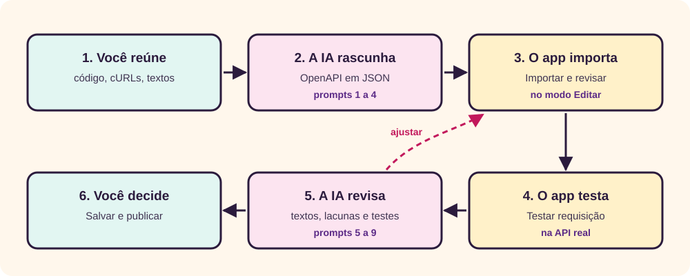

O que é o API Docs
O API Docs é um editor e visualizador de documentação de APIs REST em um único arquivo HTML. [1] Ele mostra os endpoints de uma API, permite testá-los no navegador e exporta a documentação para OpenAPI, Postman, testes em Python, InterSystems IRIS, Markdown e PDF. Os dados ficam guardados dentro do próprio arquivo: para compartilhar a documentação, basta enviar o HTML.

Este tutorial tem duas metades. A primeira explica a teoria que está por trás de cada campo da tela: o que é uma API, como é uma requisição HTTP, o que significam os códigos de status, como funciona a autenticação e por que existe o padrão OpenAPI. A segunda é um roteiro prático: você vai documentar e testar uma API pública de verdade, o ViaCEP, e exportar o resultado. No fim, prompts de IA prontos para copiar aceleram cada etapa.
O que você precisa
- Um navegador atual. Chrome e Edge gravam direto no arquivo; nos outros, salvar baixa uma cópia.
- Conexão com a internet só para testar requisições e para importar por URL. Ver, editar, importar arquivo e exportar funcionam sem rede.
- Nenhum conhecimento prévio de programação. Quem já programa vai aproveitar mais as seções de exportação.
O que é uma API
API quer dizer Application Programming Interface, ou interface de programação de aplicações. É um contrato entre dois programas: um deles, o servidor, oferece funções; o outro, o cliente, pede essas funções seguindo regras combinadas. Um aplicativo de entregas que preenche o endereço a partir do CEP não tem a base de CEPs do país: ele pergunta a uma API e recebe a resposta pronta.
O contrato diz o que pode ser pedido, como pedir e o que volta. Ele não diz como o servidor faz o trabalho por dentro. É isso que permite trocar o banco de dados ou a linguagem do servidor sem quebrar os clientes, desde que o contrato continue o mesmo. Documentar uma API é escrever esse contrato de forma que pessoas e programas consigam lê-lo.
REST
A maior parte das APIs da web segue, em maior ou menor grau, o estilo REST (Representational State Transfer), descrito por Roy Fielding em sua tese de doutorado de 2000. [2] Fielding define REST como um conjunto de restrições de arquitetura. As que mais aparecem no dia a dia são:
- Cliente e servidor separados. Cada lado evolui sem depender do outro.
- Sem estado (stateless). Cada requisição traz tudo o que o servidor precisa para atendê-la, inclusive a credencial. O servidor não “lembra” da conversa anterior.
- Cache. A resposta diz se pode ser reaproveitada, o que poupa idas ao servidor.
- Interface uniforme. Tudo é um recurso identificado por um endereço (o endereço de um CEP, a lista de pedidos de um cliente), e as operações sobre ele usam os mesmos poucos verbos do HTTP.
Na prática, “API REST” costuma significar uma API que usa HTTP, organiza os endereços por recursos e troca dados em JSON. O API Docs documenta exatamente esse tipo de API.
↑ Voltar ao topoAnatomia de uma requisição
Cliente e servidor conversam por HTTP. Cada conversa é um par: o cliente manda uma requisição e o servidor devolve uma resposta. O significado de cada parte é definido pela RFC 9110, a norma atual da semântica do HTTP. [3]
A URL: servidor, caminho e parâmetros
O endereço de um recurso é uma URL, cuja sintaxe é definida pela RFC 3986. [4] No API Docs, a URL é montada a partir de três campos que você preenche separadamente:

- Servidor (URL base)
- O começo comum a todos os endereços, como
https://api.correios.com.br. Uma API pode ter vários: produção, homologação, local. - Caminho
- O recurso dentro do servidor, como
/cep/v2/enderecos/{cep}. As chaves marcam um pedaço variável. - Parâmetro de caminho (path)
- O valor que entra no lugar das chaves. Identifica qual recurso:
01001001. É sempre obrigatório. - Parâmetro de consulta (query)
- Pares
nome=valordepois do?, separados por&. Filtram, ordenam ou paginam:?uf=SP&size=50. Costumam ser opcionais. - Cabeçalho (header)
- Informação sobre a requisição, fora da URL: formato aceito (
Accept), credencial (Authorization), idioma. - Cookie
- Valor que o navegador guarda e reenvia ao mesmo servidor. Raro em APIs consumidas por outros sistemas.
Esses quatro lugares são exatamente as opções da coluna Local dos parâmetros no app: path, query, header e cookie.
Os métodos
O método diz o que fazer com o recurso. A RFC 9110 classifica os métodos por duas propriedades que afetam a segurança e as novas tentativas: seguro é o método que, por definição, só lê; idempotente é aquele em que repetir a mesma requisição tem o mesmo efeito que fazê-la uma vez. [3]
| Método | Uso típico | Seguro | Idempotente |
|---|---|---|---|
| GET | Ler um recurso ou uma lista. | Sim | Sim |
| HEAD | Como o GET, mas só os cabeçalhos. | Sim | Sim |
| OPTIONS | Perguntar o que o recurso aceita. O navegador usa no CORS. | Sim | Sim |
| POST | Criar um recurso ou disparar uma ação. | Não | Não |
| PUT | Substituir o recurso inteiro. | Não | Sim |
| PATCH | Alterar parte do recurso. Definido à parte, na RFC 5789. [18] | Não | Não garantido |
| DELETE | Remover o recurso. | Não | Sim |
Por que isso importa: se a rede cair no meio de um PUT, o cliente pode repetir sem medo; repetir um POST pode criar dois pedidos. É por isso que os testes exportados pelo app não executam métodos que alteram dados, a não ser que você autorize.
O corpo e o JSON
Requisições POST, PUT e PATCH levam dados no corpo. O cabeçalho Content-Type diz o formato; em APIs REST, quase sempre é application/json. JSON é um formato de texto com objetos entre chaves, listas entre colchetes, textos entre aspas, números e os valores true, false e null, definido pela RFC 8259. [5]
{
"numero": "9912345678",
"dr": 10
}Uma requisição GET não deve levar corpo: a RFC 9110 diz que conteúdo em um GET não tem significado definido. [3] Por isso o app não mostra o campo de corpo para GET e HEAD.
Para fixar
- URL = servidor + caminho + parâmetros de consulta.
- Parâmetro de caminho identifica qual recurso; parâmetro de consulta filtra.
- O método diz a ação. GET lê; POST cria; PUT substitui; DELETE remove.
Respostas e códigos de status
Toda resposta começa com um código de três dígitos. O primeiro dígito diz a família, e é isso que o app usa para colorir os selos das respostas. [3]
| Família | Significado | Exemplos comuns |
|---|---|---|
| 1xx | Informativa: a resposta ainda vai continuar. | Raros em APIs. |
| 2xx | Sucesso. | 200 OK, 201 Created (recurso criado), 204 No Content (deu certo, sem corpo). |
| 3xx | Redirecionamento: o recurso está em outro lugar. | 301, 304 Not Modified (use o cache). |
| 4xx | Erro do cliente: o pedido está errado. | 400 Bad Request, 401 Unauthorized (sem credencial válida), 403 Forbidden (credencial válida, sem permissão), 404 Not Found, 422 (dados inválidos). |
| 5xx | Erro do servidor: o pedido parecia certo, mas o servidor falhou. | 500 Internal Server Error, 503 Service Unavailable. |
A distinção entre 4xx e 5xx diz de quem é a culpa e, portanto, quem precisa agir. Uma boa documentação lista também as respostas de erro, com um exemplo do corpo, porque é nelas que o desenvolvedor do cliente mais precisa de ajuda.
↑ Voltar ao topoAutenticação
A maioria das APIs precisa saber quem está pedindo. Como o REST é sem estado, a credencial vai em toda requisição, em geral no cabeçalho Authorization. O app oferece os quatro esquemas mais comuns em Editar → Autenticação:
| Tipo no app | Como vai na requisição | O que saber |
|---|---|---|
| Nenhuma | Nada. | APIs públicas, como o ViaCEP. |
| Basic | Authorization: Basic seguido de usuário:senha em Base64. | Base64 é só codificação, não criptografia: qualquer um que veja a requisição lê a senha. Só use com HTTPS. [6] |
| Bearer Token | Authorization: Bearer seguido do token. | Quem tem o token tem o acesso, sem provar mais nada; por isso o token expira e deve ser guardado como uma senha. [7] O exemplo dos Correios gera o token em um endpoint próprio e o usa nos demais. |
| API Key | Uma chave em um cabeçalho (como X-API-Key) ou na query string. | Simples de usar. Na query, a chave fica gravada em históricos e logs de servidores; prefira o cabeçalho. |
No app, a autenticação vale para todos os endpoints. Ao testar, os campos de credencial aparecem no painel Testar requisição. Eles ficam só na memória e não são gravados no arquivo ao salvar.
↑ Voltar ao topoDocumentar com OpenAPI
Uma documentação escrita em texto livre serve para pessoas, mas não para programas. A Especificação OpenAPI resolve isso: ela define uma descrição padronizada e independente de linguagem para APIs HTTP, que pessoas e computadores conseguem ler sem acesso ao código-fonte. [8] O documento OpenAPI é um objeto JSON, que pode ser escrito em JSON ou em YAML. [8]
Um pouco de história
O formato nasceu como Swagger, na empresa Wordnik. A Wikipédia situa a criação em 2010; o histórico de revisões da própria especificação registra a versão 1.0 em 10/08/2011 e o Swagger 2.0 em 08/09/2014. [10] [8] Em 2015, a especificação foi doada à OpenAPI Initiative, sob a Linux Foundation, e passou a se chamar OpenAPI. A data da doação diverge entre as fontes: a Wikipédia cita o anúncio da iniciativa em novembro de 2015, e o histórico da especificação registra a doação em 31/12/2015. A versão 3.0.0 saiu em 26/07/2017, e a 3.0.3, que é a que o app exporta, em 20/02/2020. [8] Já existem versões mais novas: a 3.2.0 foi publicada em setembro de 2025. [9] O nome Swagger continua vivo nas ferramentas da SmartBear, como o Swagger UI, e por isso as pessoas ainda dizem “o Swagger da API”.
Por que um padrão ajuda
- Uma fonte, vários usos. Do mesmo arquivo saem a página de documentação, coleções para ferramentas de teste, clientes gerados em várias linguagens e esqueletos de servidor.
- Contrato antes do código. No estilo design-first, a equipe escreve e discute a especificação antes de programar, e cliente e servidor podem ser desenvolvidos em paralelo. No estilo code-first, a especificação é gerada a partir do código já pronto. O API Docs atende o primeiro estilo e também importa o resultado do segundo.
- Verificável. Um documento OpenAPI pode ser validado por programa, e testes podem conferir se a API real cumpre o que está escrito.
Onde cada campo do app vai parar
Cada campo do app corresponde a uma parte do documento OpenAPI exportado. Conhecer essa relação ajuda a ler qualquer arquivo OpenAPI que você encontrar.
| No app | No OpenAPI 3.0.3 |
|---|---|
| Título, Versão, Descrição | info.title, info.version, info.description |
| Servidores | servers[] |
| Tags | tags[] e tags de cada operação |
| Método + Caminho | paths["/caminho"].get (ou post, put…) |
| Resumo, Descrição, Obsoleto | summary, description, deprecated |
| Parâmetros | parameters[], com in, required, schema.type e example |
| Corpo da requisição | requestBody.content["tipo"].example |
| Respostas | responses["código"], com o exemplo em application/json |
| Autenticação | components.securitySchemes e security |
| Schemas | components.schemas |
Os schemas descrevem a forma de um objeto: quais campos tem e de que tipo. O OpenAPI 3.0 usa para isso um subconjunto estendido do JSON Schema. [8]
↑ Voltar ao topoPrimeiros passos com o exemplo
O arquivo vem com uma documentação de exemplo, “API Busca CEP — Correios”. Ela serve para ver como uma API completa aparece no app: autenticação por token, um endpoint de geração de token, consulta, pesquisa paginada e um schema. A própria descrição do exemplo avisa que caminhos e campos devem ser conferidos no portal oficial dos Correios antes de qualquer uso real. [1] Em cinco minutos:
- Abra o API Docs. Ele começa no modo Visualizar, com a visão geral: título, versão, descrição, servidor e o tipo de autenticação.
- Na barra lateral, clique em
GET /cep/v2/enderecos/{cep}. O cartão do endpoint se abre com a descrição, a tabela de parâmetros e as respostas. O asterisco vermelho ao lado decepmarca um parâmetro obrigatório. - Repare nas cores: GET azul, POST verde; respostas 2xx em verde, 4xx em laranja e 5xx em vermelho.
- No campo Filtrar endpoints…, digite
token. Sobra só o endpoint de autenticação. Apague o filtro. - No fim da barra lateral, clique em
Endereco, em Schemas. A definição do objeto aparece em JSON.

No fim de cada cartão aberto fica o painel Testar requisição. Não o use com o exemplo dos Correios: a API exige contrato e token. O teste de verdade fica para a próxima seção, com uma API aberta.
↑ Voltar ao topoSeu primeiro documento: ViaCEP
O ViaCEP é um serviço gratuito de consulta de CEP que não exige cadastro. A consulta é um GET em viacep.com.br/ws/{cep}/json/, com o CEP em 8 dígitos. [12] O roteiro abaixo foi executado com cliques reais no app em 11/11/2026.
1. Comece um documento em branco
- Se quiser guardar o exemplo, salve antes uma cópia do arquivo.
- Clique em Novo e confirme. O app passa ao modo Editar, na página Informações gerais.
2. Preencha as informações gerais
- Título:
ViaCEP. Versão:1.0. A versão é a da sua documentação; quando o contrato mudar, aumente-a. - Descrição: um parágrafo sobre a API. O campo aceita Markdown simples:
**negrito**,`código`, links e listas com “- ”. - Em Servidores, troque a URL base para
https://viacep.com.br, sem barra no final, e a descrição paraProdução.

A autenticação fica em Nenhuma, que já é o padrão de um documento novo.
3. Crie o endpoint
- Na barra lateral, clique em + Endpoint. Um
GET /novo-recursoaparece. - Caminho:
/ws/{cep}/json/. Resumo:Consultar um CEP. Tag:CEP. A tag agrupa endpoints na barra lateral. - Clique em Detectar {parâmetros} do caminho. O app lê as chaves do caminho e cria o parâmetro
cep, localpath, obrigatório. - Na linha do parâmetro, escreva a descrição
CEP com 8 dígitos, sem hífene o exemplo01001000. O exemplo é o valor que o painel de teste usa de início.

4. Documente as respostas
- Na resposta
200que já existe, escreva a descrição:Endereço encontrado. CEP inexistente também volta 200, com o campo `erro`. - Em Exemplo de resposta, cole um JSON curto e clique em Formatar JSON:
Se o JSON estiver errado, a caixa fica vermelha com o aviso “JSON inválido”.{"cep":"01001-000","logradouro":"Praça da Sé","complemento":"lado ímpar","bairro":"Sé","localidade":"São Paulo","uf":"SP","ddd":"11"} - Clique em + Resposta, escreva o código
400e a descriçãoFormato inválido (não tem 8 dígitos).
5. Teste de verdade
- Clique em Visualizar e, na barra lateral, em
GET /ws/{cep}/json/. - No painel Testar requisição, o campo
cepjá traz01001000, e a URL completa aparece ao lado do botão. - Clique em Executar. Em menos de um segundo, no teste deste tutorial, chegou
200 OKcom o endereço da Praça da Sé.

ibge e regiao.Compare a resposta real com o exemplo que você escreveu: ela tem campos a mais. Isso é comum, e é por isso que os testes exportados conferem só se os campos documentados existem, e não se a resposta é idêntica. Se quiser uma documentação completa, copie a resposta real para o exemplo.
6. Provoque um erro
- Troque o CEP para
0100100, com 7 dígitos, e execute. O app mostra Falha na requisição: “Failed to fetch”. - Troque para
99999999e execute. Volta200 OKcom{"erro": "true"}.
O primeiro caso parece uma queda da API, mas não é. A seção Testar requisições e CORS explica o que aconteceu. No segundo, a documentação do ViaCEP mostra "erro": true, booleano, e a resposta real trouxe "true", texto. [12] Esse tipo de diferença é exatamente o que testar a documentação revela.
7. Salve e exporte
- Clique em Salvar (Ctrl+S) e grave, por exemplo, como
viacep.html. Esse arquivo já é a documentação pronta para enviar. - Em Exportar ▾ → OpenAPI 3, o app baixa
viacep-openapi.json. No teste deste tutorial, esse arquivo passou na validação do pacote@apidevtools/swagger-parser, que confere o documento contra o esquema oficial do OpenAPI 3.0. - Em Exportar ▾ → Testes Python, o app baixa
test_viacep.py. Executado compytest, o teste passou contra o ViaCEP real.
A interface
- Barra superior
- Título e versão da API, o aviso ● não salvo, a chave Visualizar / Editar, e os botões Salvar, Exportar ▾, Importar ▾ e Novo.
- Barra lateral
- O campo Filtrar endpoints…, que procura no método, no caminho, no resumo e na tag; os endpoints agrupados por tag; e os schemas. No modo Editar, ganha Informações gerais, Autenticação, Tags, + Endpoint e + Schema.
- Área central
- No modo Visualizar, a documentação navegável com o painel de teste em cada endpoint. No modo Editar, o formulário do item escolhido na barra lateral.
- Avisos
- Mensagens curtas aparecem por alguns segundos no rodapé da tela: arquivo salvo, parâmetros detectados, erro de importação.
Em telas com menos de 860 px de largura, a barra lateral some e a navegação fica só pela rolagem da área central.
↑ Voltar ao topoO modo Editar em detalhe
| Página | O que você define |
|---|---|
| Informações gerais | Título, versão, descrição em Markdown simples e a lista de servidores. O primeiro servidor é o padrão do teste; no modo Visualizar, uma lista permite trocar. |
| Autenticação | Nenhuma, Bearer Token, Basic ou API Key. Para API Key, o nome do cabeçalho ou parâmetro e se vai no header ou na query. |
| Tags | Nome e descrição de cada grupo. Renomear uma tag atualiza os endpoints que a usam. |
| Endpoint | Método, caminho, resumo, tag, descrição, a opção Obsoleto (deprecated), parâmetros, corpo da requisição e respostas. Duplicar cria uma cópia logo abaixo; Excluir pede confirmação. |
| Schema | Nome, descrição e a definição em JSON Schema. |
Parâmetros
Cada linha tem nome, local (path, query, header, cookie), tipo, a marca de obrigatório, descrição e exemplo. Um parâmetro de caminho é sempre obrigatório: a especificação OpenAPI exige isso, e o app aplica a regra ao exportar, mesmo que a marca esteja desligada. [8] Os tipos integer, number e boolean fazem o exemplo ser exportado como número ou booleano, e não como texto.
Corpo e respostas
O Content-Type sugere os tipos mais comuns. Os campos de exemplo com JSON validam enquanto você digita e têm o botão Formatar JSON. Um exemplo que não é JSON é aceito, mas tratado como texto.
Endpoints marcados como obsoletos aparecem riscados e com o selo “obsoleto”. É a forma padrão de avisar que algo vai sair, sem remover de repente.
↑ Voltar ao topoTestar requisições e CORS
O painel Testar requisição monta a URL com o servidor escolhido, preenche os parâmetros com os exemplos, inclui a credencial digitada e envia a requisição pelo próprio navegador. O resultado mostra o código, o tempo, os cabeçalhos da resposta, o comando curl equivalente e o corpo formatado.
Por que o navegador bloqueia algumas chamadas
Por segurança, o navegador só deixa um script ler a resposta de outro site se esse site autorizar, com o cabeçalho Access-Control-Allow-Origin. Esse mecanismo se chama CORS (Cross-Origin Resource Sharing). [11] Sem a autorização, o navegador entrega ao script apenas um erro genérico, e o app mostra “Failed to fetch”.
Foi o que aconteceu com o CEP de 7 dígitos. Chamado fora do navegador, o ViaCEP respondeu 400 Bad Request com uma página HTML e sem o cabeçalho CORS; a consulta válida voltou com Access-Control-Allow-Origin: *. O erro existia, mas o navegador o escondeu.
Além disso, requisições com Authorization, com Content-Type: application/json ou com métodos como PUT e DELETE passam antes por uma consulta OPTIONS, a preflight, que o servidor também precisa aprovar. [11] Muitas APIs corporativas não liberam CORS para qualquer origem.
O que fazer quando o teste falha
- Abra Comando curl, clique em Copiar curl e rode no terminal. O curl não é navegador e não aplica CORS: você vê o código e o corpo verdadeiros.
- Se o curl funcionar, a API está no ar e o bloqueio é do navegador. Documente normalmente; o teste no app é que não é possível.
- Se o curl também falhar, confira o servidor, o caminho, a credencial e a rede.
Salvar
O app não usa servidor nem banco de dados. A documentação fica em um bloco JSON dentro do próprio HTML, e salvar é gravar um novo HTML com esse bloco atualizado.

| Navegador | O que acontece ao salvar |
|---|---|
| Chrome e Edge | Na primeira vez, o navegador pergunta onde gravar. Depois disso, Salvar grava no mesmo arquivo. [17] |
| Outros | O app baixa uma cópia. Substitua o arquivo original por ela. |
O que não é gravado: as credenciais digitadas no teste, os valores alterados no painel de teste e os resultados das chamadas. Se você tentar fechar a aba com alterações pendentes, o navegador pede confirmação.
↑ Voltar ao topoImportar
Muitas APIs já têm uma especificação, gerada pelo próprio framework do servidor. Importar evita digitar tudo de novo.
| Opção | Aceita |
|---|---|
| Swagger / OpenAPI | Arquivo .json, .yaml ou .yml, em Swagger 2.0 ou OpenAPI 3. Também dá para arrastar o arquivo para a janela. |
| Swagger por URL | O endereço da especificação, como …/swagger.json. Depende de CORS: se o servidor bloquear, baixe o arquivo e importe pelo disco. |
| Collection do Postman | Arquivo .json exportado pelo Postman, nas versões 2.0 ou 2.1. |
Se o documento atual já tiver endpoints, o app pergunta o que fazer:

- Mesclar acrescenta endpoints, tags, servidores e schemas que ainda não existem. Um endpoint com o mesmo método e caminho de outro já existente é ignorado. No teste, mesclar o ViaCEP ao exemplo dos Correios resultou em 5 endpoints.
- Substituir tudo descarta a documentação atual.
Quando um exemplo não existe na especificação de origem, o app cria um a partir do schema, com valores genéricos como "string" e 0. Revise esses exemplos depois de importar.
Exportar

| Formato | Arquivo | Para que serve |
|---|---|---|
| OpenAPI 3 | nome-openapi.json | Especificação 3.0.3 para Swagger UI, Redoc, geradores de código e gateways de API. [8] |
| Postman | nome.postman_collection.json | Collection v2.1 com uma pasta por tag, variável baseUrl e variáveis vazias para as credenciais. [13] |
| Testes Python | test_nome.py | Testes com pytest e Requests. [14] [15] Detalhes abaixo. |
| InterSystems IRIS | Pacote.Classe.cls | Classe que estende %CSP.REST, com as rotas no UrlMap, um método por endpoint com a resposta de exemplo e marcas TODO, e a rota GET /_spec que devolve o OpenAPI. [16] O app pede o nome da classe. |
| Markdown | nome.md | Documento com sumário, tabelas e exemplos, para README, wiki ou repositório. |
| pela impressão | Abre a janela de impressão com capa, sumário, endpoints e schemas. Escolha “Salvar como PDF” como destino. |
Os testes em Python
O arquivo gerado traz no topo as instruções de instalação e execução. Cada teste chama um endpoint com os valores de exemplo, confere o código de sucesso documentado e verifica se os campos do exemplo de resposta existem na resposta real com o mesmo tipo JSON.
pip install pytest requests
pytest -v test_viacep.py- A URL base e as credenciais vêm de variáveis de ambiente:
API_BASE_URL,API_TOKEN,API_USEReAPI_PASS, ouAPI_KEY. Assim, nenhuma senha fica no código. - Métodos que alteram dados (POST, PUT, PATCH, DELETE) só rodam com
API_ALLOW_WRITE=1. Sem isso, aparecem como pulados. - Se a API tem autenticação e o endpoint documenta a resposta
401, o app cria também um teste sem credencial, que espera401. API_MAX_MSdefine um tempo máximo de resposta, se você quiser vigiar a lentidão.
Prompts de IA
Uma IA acelera as partes demoradas da documentação: levantar endpoints espalhados pelo código, transformar chamadas soltas em uma especificação, escrever descrições e ampliar testes. Ela também erra com segurança: inventa campos, chuta códigos de status e descreve comportamentos que a API não tem. Trate a saída como rascunho e confira cada endpoint com o painel Testar requisição, que fala com a API de verdade. Para escrever prompts melhores, veja o tutorial de prompts.

Antes de colar: tire tokens, senhas, chaves de API, endereços internos e dados de clientes do que vai para a IA. Troque por valores fictícios e siga a política da sua organização. O app só se comunica com a API que você testa, mas o serviço de IA recebe tudo o que você colar nele.
Troque os trechos entre colchetes e cole na ferramenta de IA que você usa. Os prompts seguem a ordem do trabalho: os de 1 a 4 produzem a documentação, e os de 5 a 9 a revisam e a colocam em uso. Cada um funciona sozinho.
1. Entrevistar antes de documentar
Quando a API ainda está na cabeça de quem a fez. A IA pergunta, em vez de supor.
Você é um redator técnico experiente em APIs REST e na especificação OpenAPI.
Quero documentar esta API: [descreva em poucas frases o que ela faz e quem a usa].
Antes de escrever qualquer documentação, me entreviste:
- Faça uma pergunta por vez e espere minha resposta.
- Cubra: URL base de cada ambiente; forma de autenticação; cada recurso e as operações sobre ele (método e caminho); parâmetros de caminho, de consulta e de cabeçalho, com tipo, obrigatoriedade e um exemplo; corpo das requisições; respostas de sucesso e de erro, com o código e um exemplo de corpo; paginação; limites de uso; o que está obsoleto.
- Pergunte principalmente sobre os erros: o que acontece com dado inválido, sem credencial, sem permissão e com recurso inexistente.
- Não invente respostas. Se eu não souber, registre como pendência.
Ao final, entregue: uma tabela de endpoints (método, caminho, resumo, tag), a lista de parâmetros e respostas de cada um, exemplos de corpo em JSON e a lista de pendências.2. Levantar endpoints a partir do código
Para APIs já programadas sem documentação. Pede a origem de cada item, o que facilita conferir.
A partir do código abaixo, levante o contrato da API REST que ele implementa.
Linguagem e framework: [por exemplo: Java com Spring, C# com ASP.NET, Node com Express, Python com FastAPI, ObjectScript com %CSP.REST]
Código:
[cole os controladores, rotas ou o UrlMap, e as classes de entrada e saída]
Entregue:
1. Tabela de endpoints: método, caminho (com {parâmetros}), resumo, tag sugerida e o arquivo e a linha de onde saiu.
2. Para cada endpoint: parâmetros (nome, local path, query, header ou cookie, tipo, obrigatório), corpo da requisição com um exemplo em JSON, e respostas com código e exemplo de corpo.
3. Os códigos de erro que o código realmente devolve, e em que situação.
4. Como a autenticação é verificada.
5. Lacunas: retornos que dependem de código que não está aqui, exceções não tratadas e comportamentos ambíguos, com uma pergunta para cada um.
Não deduza o que o código não mostra. Use exemplos fictícios.3. Gerar o OpenAPI para importar no app
Transforma o que você reuniu em um arquivo que o app importa de uma vez, em vez de digitar endpoint por endpoint. O formato pedido é o que o importador do app aproveita.
Gere uma especificação OpenAPI 3.0.3 em JSON para a API descrita no fim. Ela será importada no API Docs, um editor que lê um subconjunto do OpenAPI.
Responda só com o JSON, sem comentários e sem cercas de código.
Use apenas estes elementos:
- "openapi": "3.0.3" e "info" com "title", "version" e "description". A descrição aceita Markdown simples: **negrito**, `código`, links e listas com "- ".
- "servers": lista com "url" (sem barra no final) e "description".
- "tags": lista com "name" e "description". Cada operação usa uma só tag.
- "paths": uma operação por método (get, post, put, patch, delete), com "tags", "summary" (curto, começando por verbo), "description" e, se for o caso, "deprecated": true.
- "parameters": "name", "in" (path, query, header ou cookie), "required", "description", "schema" com "type" (string, integer, number, boolean, array ou object) e "example". Todo {parâmetro} do caminho precisa de um parâmetro com "in": "path" e "required": true.
- "requestBody" só em post, put e patch: "description" e "content" com um único tipo de mídia, em geral "application/json", contendo "example".
- "responses": para cada código, "description" e, quando houver corpo, "content": {"application/json": {"example": ...}}. Inclua as respostas de erro que a API realmente usa, com o corpo de erro.
- "components.securitySchemes" com um único esquema: {"type": "http", "scheme": "bearer"}, {"type": "http", "scheme": "basic"} ou {"type": "apiKey", "name": "...", "in": "header"}; e "security" na raiz apontando para ele. Se a API for pública, omita os dois.
- "components.schemas" com os objetos principais.
Regras:
- Não invente endpoints, campos nem códigos. O que faltar vai para "info.description", em uma lista chamada Pendências.
- Exemplos realistas e fictícios: nunca tokens, senhas, documentos ou e-mails reais.
- Os exemplos de resposta usam os mesmos nomes de campo dos schemas.
Informações da API:
[cole o resultado do prompt 1, 2 ou 4, a documentação existente ou a sua descrição]4. Transformar chamadas reais em documentação
Quando você só tem chamadas que funcionam. No navegador, abra as ferramentas de desenvolvedor, aba Rede, clique com o botão direito na requisição e use “Copiar como cURL”.
Abaixo há chamadas reais a uma API, em cURL, com as respostas que voltaram.
Já troquei tokens e dados pessoais por valores fictícios.
[cole cada cURL seguido do código de status e do corpo da resposta]
Faça:
1. Agrupe as chamadas por recurso e deduza os endpoints: método e caminho, trocando valores que variam por {parâmetros} com nomes claros (por exemplo /pedidos/123 vira /pedidos/{id}).
2. Para cada endpoint, liste parâmetros de caminho, consulta e cabeçalho, com tipo e um exemplo tirado das chamadas.
3. Use os corpos reais como exemplos de requisição e de resposta, encurtando listas longas para dois itens.
4. Identifique a autenticação pelos cabeçalhos (Authorization, X-API-Key ou outro), sem repetir o valor.
5. Marque como “visto uma vez” o que aparece em uma só chamada, e liste o que falta saber: respostas de erro não observadas, parâmetros opcionais e limites.
Entregue em tabelas, prontas para usar no prompt 3.5. Revisar a documentação
Uma segunda leitura antes de publicar. Use o arquivo de Exportar ▾ → Markdown ou OpenAPI 3.
Revise a documentação de API abaixo como alguém que vai integrar com ela pela primeira vez.
[cole o Markdown ou o OpenAPI exportado pelo API Docs]
Verifique e aponte, endpoint por endpoint:
- Método coerente com a ação: GET só lê, POST cria, PUT substitui, PATCH altera parte, DELETE remove.
- Caminhos com substantivos e padrão de nomes consistente (plural ou singular, maiúsculas, hífens).
- Parâmetros sem descrição, sem exemplo, com tipo errado, ou de caminho que não aparecem no caminho.
- Respostas de erro ausentes (400, 401, 403, 404, 422, 500) e erros devolvidos com código 200.
- Exemplos que não batem com o schema ou entre si.
- Dados que parecem reais ou sensíveis em exemplos: tokens, senhas, documentos, e-mails.
- Resumos vagos e descrições que não dizem o efeito da operação.
Entregue uma tabela com: endpoint, problema, gravidade (alta, média, baixa) e a correção sugerida, em texto pronto para colar no app. Termine com as três correções mais importantes.6. Escrever textos para quem vai integrar
Melhora resumos e descrições sem mudar o contrato. A saída vem no formato dos campos do app.
Reescreva os textos desta documentação de API para quem vai integrar com ela.
[cole o Markdown exportado ou a lista de endpoints com resumo e descrição]
Para cada endpoint, entregue:
- Resumo: até 60 caracteres, começando por verbo no infinitivo (por exemplo, Consultar um CEP).
- Descrição: até 4 frases. O que a operação faz, quando usar, efeitos colaterais e um cuidado importante. Use só este Markdown: **negrito**, `código`, links e listas com "- ".
- Descrição de cada parâmetro: uma frase com o formato esperado e um exemplo.
Escreva também a descrição geral da API, com: para que serve, como autenticar, onde conseguir a credencial e um primeiro passo.
Não altere métodos, caminhos, nomes de campos nem códigos. Se um texto atual estiver errado em relação ao contrato, aponte em separado.7. Ampliar os testes em Python
O arquivo de Exportar ▾ → Testes Python cobre o caminho feliz. Este prompt acrescenta os casos de erro e de borda.
Abaixo está um arquivo de testes pytest gerado a partir da documentação de uma API, e a documentação.
Testes:
[cole o test_*.py exportado]
Documentação:
[cole o OpenAPI ou o Markdown exportado]
Acrescente testes, sem mudar os que existem:
- Para cada endpoint: parâmetro obrigatório ausente, tipo errado, valor fora do limite e recurso inexistente, esperando os códigos que a documentação define.
- Para endpoints com autenticação: sem credencial (401) e, se a documentação definir, sem permissão (403).
- Para listas paginadas: primeira página, página vazia e tamanho máximo.
Regras:
- Reaproveite a fixture api e as funções url, check_status, json_of e assert_shape do arquivo.
- Leia URL e credenciais das variáveis de ambiente já usadas; nunca escreva segredos no código.
- Marque com @WRITE todo teste que use POST, PUT, PATCH ou DELETE.
- Se a documentação não disser qual código esperar, não invente: crie o teste com pytest.skip e o motivo.
Entregue só o código novo, pronto para colar no fim da classe correspondente, e uma lista do que ficou sem teste.8. Diagnosticar uma chamada que falhou
Para quando o painel de teste mostra erro e você não sabe se o problema é a API, a rede, o navegador ou a documentação.
Uma chamada a uma API falhou. Ajude a descobrir a causa.
Mensagem no navegador: [por exemplo: Failed to fetch, ou o código e o corpo mostrados]
Comando curl (sem o token): [cole o curl copiado do painel Testar requisição]
Resultado do curl no terminal: [código de status, cabeçalhos e corpo, ou a mensagem de erro]
O que a documentação diz que deveria acontecer: [código e corpo esperados]
Classifique a causa mais provável entre: bloqueio de CORS no navegador, rede ou DNS, certificado HTTPS, credencial ausente ou expirada, falta de permissão, requisição malformada, recurso inexistente, erro do servidor, ou documentação desatualizada.
Explique em que evidência você se baseou, diga o próximo teste que confirma a hipótese e, se for o caso, o que corrigir na documentação. Não suponha nada que as evidências não mostrem.9. Implementar a classe gerada para o InterSystems IRIS
A exportação InterSystems IRIS cria rotas e métodos com a resposta de exemplo e marcas TODO. Este prompt pede a implementação, mantendo o contrato.
Abaixo está uma classe ObjectScript que estende %CSP.REST, gerada a partir da documentação de uma API. Cada método devolve a resposta de exemplo e tem um comentário TODO.
Classe:
[cole o .cls exportado]
Regras de negócio e dados:
[descreva as tabelas ou classes persistentes envolvidas e o que cada endpoint deve fazer]
Implemente os métodos marcados com TODO:
- Não mude o UrlMap, os nomes dos métodos nem os códigos e campos da documentação.
- Use %DynamicObject e %DynamicArray para montar o JSON de resposta.
- Em SQL, use parâmetros (? ou :variável); nunca concatene texto do usuário na consulta.
- Responda com ..Erro(código, mensagem) nos erros documentados: 400 para entrada inválida e 404 para recurso inexistente.
- Mantenha o bloco Try/Catch existente.
Entregue a classe completa e, em seguida, a lista de suposições que você fez sobre os dados.Como importar o JSON do prompt 3
- Copie a resposta da IA para um editor de texto e salve com a extensão
.json, por exemplominha-api.json. - No app, use Importar ▾ → Swagger / OpenAPI, ou arraste o arquivo para a janela. Se já houver endpoints, escolha Mesclar ou Substituir tudo.
- Passe pelo modo Editar: confira caminhos, parâmetros e exemplos, e leia as pendências na descrição geral.
- No modo Visualizar, teste cada endpoint em Testar requisição. Onde a resposta real divergir do exemplo, vale a resposta real.
- Clique em Salvar.
Para APIs grandes, peça um JSON por tag e importe cada um com Mesclar: o app acrescenta o que é novo e ignora endpoints com o mesmo método e caminho.
| Sintoma ao importar | Causa provável | O que fazer |
|---|---|---|
| “YAML linha 1: esperado "chave: valor"” (ou outra linha) | A IA escreveu texto antes ou depois do JSON. Como o arquivo não começa com {, o app tenta lê-lo como YAML. | Apague tudo o que estiver fora das chaves externas { }. |
| “conteúdo não reconhecido” | A resposta veio entre cercas de código, como ```json. | Apague as linhas das cercas. |
| “JSON inválido” | A resposta foi cortada no meio, comum em APIs grandes. | Peça em partes, uma tag por vez, e importe cada parte com Mesclar. |
| “formato não reconhecido” | Falta a chave "openapi" na raiz. | Peça para a IA corrigir conforme o formato do prompt 3. |
| “Nenhum endpoint encontrado no arquivo” | "paths" vazio, ou métodos em maiúsculas ("GET"). | Confira se cada operação está dentro de "paths", com o método em minúsculas. |
Exemplos com "string" e 0 | A IA deu só o schema, sem "example". | Peça exemplos realistas ou cole respostas reais do painel de teste. |
Erros comuns
“Failed to fetch: a API caiu”
Quase sempre é CORS ou rede. Rode o curl antes de concluir qualquer coisa.
Credencial no exemplo ou na descrição
O arquivo HTML é feito para ser enviado. Token e senha vão só nos campos do painel de teste, que não são gravados.
Exemplo inventado
Um exemplo escrito de cabeça diverge da API real. Execute a chamada e use a resposta verdadeira como exemplo.
Documentar só o sucesso
Quem integra precisa saber o que volta quando dá errado. Documente 400, 401, 404 e o corpo de erro.
Corpo em GET
Conteúdo em GET não tem significado definido no HTTP. Para filtros, use parâmetros de consulta.
Esquecer de salvar
Enquanto aparecer “● não salvo”, nada foi gravado. Use Ctrl+S.
Limitações e solução de problemas
O app cobre o essencial do OpenAPI, não a especificação inteira. O que fica de fora:
- Uma única forma de autenticação para a API toda. Não há autenticação por endpoint, OAuth 2 com fluxos, nem mais de um esquema. Ao importar, só o primeiro esquema é aproveitado, e OAuth 2 vira Bearer.
- Parâmetros têm só tipo, sem formato, lista de valores, mínimo ou máximo.
- Exemplos de resposta são exportados sempre como
application/json, e cabeçalhos de resposta não são documentados. - Os schemas ficam numa lista própria; os endpoints não apontam para eles com
$ref. - Na importação, ficam de fora os parâmetros
formDatado Swagger 2.0 e os cabeçalhos de resposta; de várias tags ou vários exemplos, fica o primeiro. - O YAML é lido por um interpretador próprio, que cobre o uso comum. Se um arquivo YAML falhar, converta-o para JSON e importe de novo.
| Sintoma | Causa provável e solução |
|---|---|
| “Failed to fetch” no teste | CORS, rede ou certificado. Rode o curl copiado do painel. |
401 no teste | Credencial ausente, errada ou expirada. Preencha o campo de token do painel; ele não persiste depois de recarregar a página. |
A URL do teste mostra {cep} | O parâmetro de caminho está vazio, ou o nome entre chaves não bate com o nome do parâmetro. |
| “Formato não reconhecido” ao importar | O arquivo não é Swagger 2.0, OpenAPI 3 nem Postman v2. Confira se o JSON está completo. |
| Swagger por URL falha | O servidor bloqueia CORS. Abra a URL no navegador, salve o arquivo e use Swagger / OpenAPI. |
| Salvar baixou um arquivo em vez de gravar | Comportamento esperado fora do Chrome e do Edge. Substitua o original pela cópia baixada. |
Revisão rápida
Tente responder antes de abrir cada pergunta.
1. Em https://viacep.com.br/ws/01001000/json/, qual é o servidor e qual é o parâmetro de caminho?
O servidor é https://viacep.com.br, e o parâmetro de caminho é 01001000, o valor de {cep}.
2. Repetir um PUT por causa de uma queda de rede é seguro? E um POST?
O PUT é idempotente: repetir tem o mesmo efeito. O POST não é: repetir pode criar o recurso duas vezes.
3. Qual a diferença entre 401 e 403?
401: falta uma credencial válida. 403: a credencial é válida, mas não tem permissão para aquilo.
4. Por que Basic sem HTTPS é perigoso?
Porque usuário e senha vão apenas codificados em Base64, que qualquer pessoa decodifica.
5. O teste mostrou “Failed to fetch”. Qual é o primeiro passo?
Copiar o curl e rodar no terminal, para ver o código e o corpo verdadeiros, sem a restrição de CORS do navegador.
6. O token digitado no painel de teste vai junto quando envio o HTML salvo?
Não. Credenciais ficam só na memória e não são gravadas no arquivo.
7. Por que exportar OpenAPI, se o HTML já mostra a documentação?
Porque o OpenAPI é lido por outras ferramentas: Swagger UI, geradores de clientes, gateways e validadores.
Referências
- Giovani Perotto Mesquita, “API Docs”, aplicativo em um único arquivo HTML, giovanipm.github.io/api-docs.html.
- Roy Thomas Fielding (em inglês), “Architectural Styles and the Design of Network-based Software Architectures”, tese de doutorado, Universidade da Califórnia em Irvine, 2000, capítulo 5, acesso em 11/11/2026, ics.uci.edu/~fielding/pubs/dissertation/top.htm.
- IETF (em inglês), RFC 9110, “HTTP Semantics”, junho de 2022, seções 9 (métodos) e 15 (códigos de status), acesso em 11/11/2026, rfc-editor.org/rfc/rfc9110.
- IETF (em inglês), RFC 3986, “Uniform Resource Identifier (URI): Generic Syntax”, 2005, acesso em 11/11/2026, rfc-editor.org/rfc/rfc3986.
- IETF (em inglês), RFC 8259, “The JavaScript Object Notation (JSON) Data Interchange Format”, 2017, acesso em 11/11/2026, rfc-editor.org/rfc/rfc8259.
- IETF (em inglês), RFC 7617, “The 'Basic' HTTP Authentication Scheme”, 2015, acesso em 11/11/2026, rfc-editor.org/rfc/rfc7617.
- IETF (em inglês), RFC 6750, “The OAuth 2.0 Authorization Framework: Bearer Token Usage”, 2012, acesso em 11/11/2026, rfc-editor.org/rfc/rfc6750.
- OpenAPI Initiative (em inglês), “OpenAPI Specification v3.0.3”, 20/02/2020, inclusive o apêndice A, “Revision History”, acesso em 11/11/2026, spec.openapis.org/oas/v3.0.3.html.
- OpenAPI Initiative (em inglês), “OpenAPI Specification v3.2.0”, setembro de 2025, acesso em 11/11/2026, spec.openapis.org/oas/v3.2.
- Wikipédia (em inglês), “OpenAPI Specification”, acesso em 11/11/2026, en.wikipedia.org/wiki/OpenAPI_Specification. Divergência: a Wikipédia data a criação do Swagger em 2010 e o anúncio da OpenAPI Initiative em novembro de 2015; o histórico de revisões da especificação [8] registra a versão 1.0 em 10/08/2011 e a doação em 31/12/2015.
- MDN Web Docs (em inglês), “Cross-Origin Resource Sharing (CORS)”, acesso em 11/11/2026, developer.mozilla.org/en-US/docs/Web/HTTP/Guides/CORS.
- ViaCEP, página do webservice, acesso em 11/11/2026, viacep.com.br. Divergência: a página mostra
"erro": truepara CEP inexistente; a chamada real deste tutorial, em 11/11/2026, devolveu"erro": "true". - Postman (em inglês), “Postman Collection Format v2.1.0”, esquema JSON, acesso em 11/11/2026, schema.getpostman.com/json/collection/v2.1.0/collection.json.
- pytest (em inglês), documentação, acesso em 11/11/2026, docs.pytest.org.
- Requests (em inglês), “Requests: HTTP for Humans”, documentação, acesso em 11/11/2026, requests.readthedocs.io.
- InterSystems (em inglês), “Creating REST Services”, documentação do InterSystems IRIS, acesso em 11/11/2026, docs.intersystems.com/irislatest/csp/docbook/Doc.View.cls?KEY=GREST.
- MDN Web Docs (em inglês), “File System API”, acesso em 11/11/2026, developer.mozilla.org/en-US/docs/Web/API/File_System_API.
- IETF (em inglês), RFC 5789, “PATCH Method for HTTP”, 2010, acesso em 11/11/2026, rfc-editor.org/rfc/rfc5789.